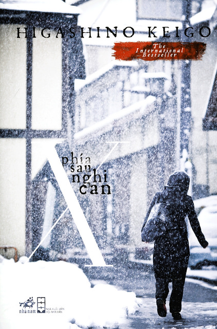

REVIEW SÁCH
Phía sau nghi can X
Nhận xét của mình
Để dùng 3 từ để miêu tả cuốn này thì mình sẽ dùng bất ngờ, tình yêu và tinh vi. Nói thật thì đoạn đầu truyện mình thấy khá chán, mình thấy sao có mỗi chứng cứ ngoại phạm mà cảnh sát phải hỏi tới mấy chục trang sách thế. Rồi cả câu chuyện tình yêu tay ba (2 người cùng thích 1 cô gái) cũng dính tới vụ án khiến mình thấy khá rối. Nhưng bất ngờ đến, khi đã vỡ lở mọi chuyện thì mình mới hiểu “à thì ra là do thế” và rồi mọi thứ đều được hợp lý hoá. Mình cảm thấy Higashino Keigo viết trinh thám nhưng vẫn có những yếu tố về tình cảm đôi lứa hay tình thân gia đình rất hay. Mình cũng rất recommend cho mọi người cuốn này nếu mọi người đang muốn tìm đọc 1 tác phẩm của ông Keigo